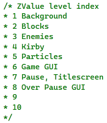

Composizione in Layer
Si fa uso di una gerarchia di rendering

Background
Contiene lo sfondo (animato) della mappa di gioco.
Fornisce i limiti entro cui si può spostare la Camera.
Layer Entità
In questo layer si trovano tutte le entità presenti nella scena.
Layer HUD
In questo layer si trovano gli elementi relativi allo stato di Kirby: punteggio, vite, salute e abilità.
Layer di pausa
Rappresenta il top layer e contiene gli elementi relativi alla schermata iniziale e di pausa nonché i crediti, comandi e titoli di coda.